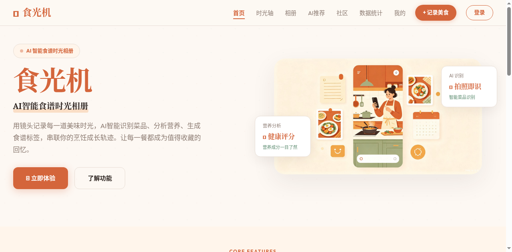
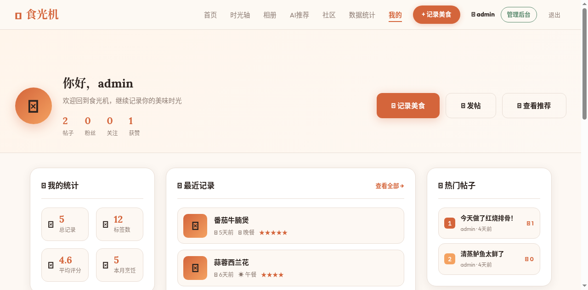
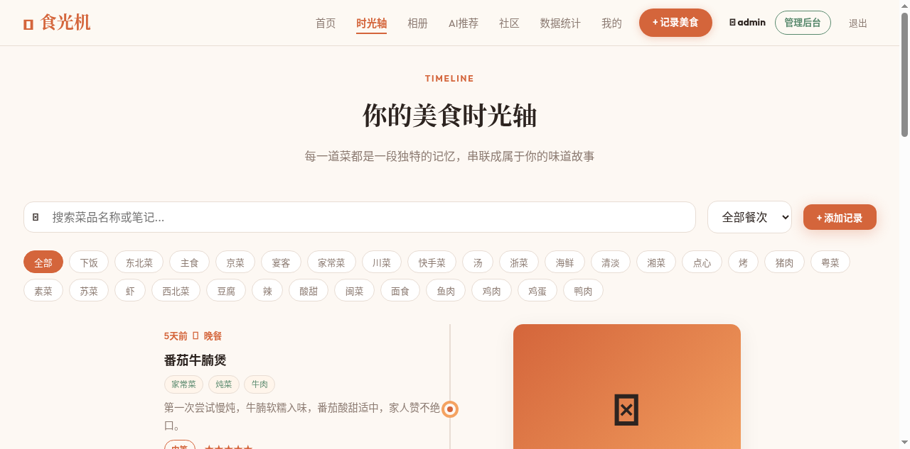
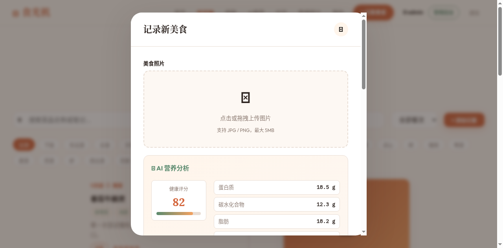
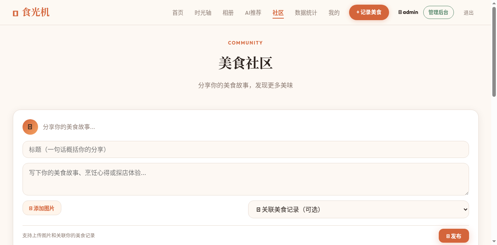
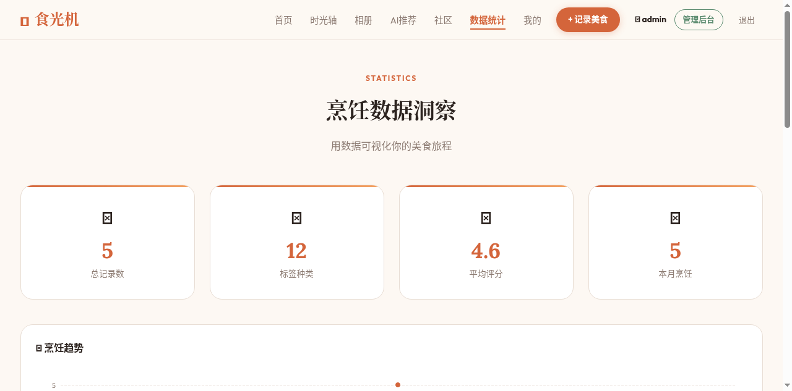

1. Demo 简介
产品形态：Web 网站（前后端分离全栈应用）
核心用户：热爱烹饪的美食爱好者、关注饮食健康的人群、喜欢记录生活的年轻用户
一句话介绍：拍照即识别菜品，AI 自动分析食材、热量与健康属性，串联美食时光轴，并可在社区分享互动的智能美食记录平台。
核心功能
📸
AI 菜品识别 + 营养分析
上传美食照片，AI 自动识别菜品名称，计算食材清单、热量、五大营养素（蛋白质/碳水/脂肪/纤维/钠）、健康评分（0-100）、健康标签和烹饪小贴士。支持接入 GPT-4o Vision 真实识别，无 API Key 时自动降级为本地模拟。
📅
美食时光轴 + 数据洞察
按时间线记录每一道菜，支持标签/餐次/搜索筛选。ECharts 可视化烹饪趋势、标签分布、餐次分布、难度分布，用数据读懂你的厨房。
👥
美食社区互动
发布美食帖子（可关联记录、上传图片），点赞/评论/关注功能完整。个人仪表盘展示社交数据、社区动态、热门帖子和推荐用户。
🤖
智能食谱推荐
基于烹饪历史的标签偏好和难度分布，AI 推荐未尝试过的菜品，给出匹配分数和推荐理由，告别"今天吃什么"的烦恼。
界面展示

首页（未登录状态）— 六大核心功能介绍，登录后自动跳转个人仪表盘

个人仪表盘 — 欢迎区、烹饪统计、社交数据、社区动态、快捷入口

美食时光轴 — 按时间线展示所有记录，支持搜索、标签和餐次筛选

AI 营养分析面板 — 健康评分85分、五大营养素、食材清单、健康标签、烹饪小贴士

美食社区 — 发帖、全部动态/热门帖子/我的帖子、点赞评论互动

数据洞察 — 烹饪趋势折线图、标签饼图、餐次柱状图、难度环形图（ECharts）
2. Demo 创作思路
💡 灵感来源
在日常生活中，很多人都喜欢做饭、喜欢拍照发朋友圈，但拍完之后照片就散落在相册里，没有一个专门的工具来系统地记录自己的烹饪成长。同时，越来越多人关注健康饮食，但缺乏一个简单直观的方式来了解自己吃的东西"到底健不健康"。
我希望做一个不仅能"记录"，还能"理解"美食的工具——不是冷冰冰的卡路里计数器，而是一个有温度的、能串联回忆的"美食时光相册"，同时借助 AI 的能力自动识别和分析，让记录的门槛降到最低。
🎯 想解决的问题
- 记录门槛高：传统美食记录 App 需要手动输入菜名、食材、热量等大量信息，操作繁琐，很多人记了几天就放弃了
- 营养认知缺失：大多数人对自己做的菜有多少热量、营养是否均衡没有概念，想健康饮食却无从下手
- 美食记忆碎片化：做好的菜拍了照就沉睡在手机相册里，没有按时间线串联，无法回顾自己的厨艺成长
- 缺乏社交互动：做饭的乐趣之一是分享，但缺少一个垂直于"家常烹饪"的社区来交流心得
🔍 为什么做这个方向
在"生活娱乐"赛道中，美食是一个高频、刚需、有情感温度的场景。我选择这个方向有几个判断：
- AI 能力刚好匹配：多模态大模型（如 GPT-4o）对菜品图片的识别已经非常成熟，可以自动提取菜名、食材、热量等信息，极大降低用户输入成本
- 情感价值高：美食不仅是营养摄入，更是生活记忆。时光轴的设计让每一道菜都有了时间的维度，回看时能唤起当时的场景和心情
- 社区黏性强：美食天然具有社交属性，"晒菜"是高频行为，社区功能可以带来持续的用户活跃
- 健康趋势：随着健康意识提升，营养分析功能正好切中用户对"吃得明白"的需求
3. Demo 体验地址
📦 交互式 HTML 格式体验包：项目以完整源码形式打包（见附件 shiguangji.zip），包含前后端所有代码，解压后即可本地运行。
启动方式：
cd shiguangji/server
npm install
npm start
# 访问 http://localhost:3000
# 默认管理员账号：admin / admin123
项目为前后端分离架构，后端使用 Node.js + Express + SQLite（无需额外安装数据库），前端为纯 HTML/CSS/JS 多页面应用。所有数据存储在本地 SQLite 文件中，支持完整的用户注册、登录、记录、社区互动等功能。
4. TRAE 实践过程
🛠️ 开发流程
整个项目从 0 到 1 完全使用 TRAE AI 助手完成开发，经历了三个迭代阶段：
| 阶段 | 内容 | 关键产出 |
|---|
| v1.0 Demo 原型 | 从需求分析到原型设计，确定产品定位和视觉风格 | 单页 Demo HTML、设计系统、核心交互原型 |
| v2.0 全栈重构 | 前后端分离，接入数据库，实现真实 AI 识别 | Express 后端、SQLite 数据库、JWT 认证、7 个前端页面、管理后台 |
| v3.0 社区+AI增强 | 新增社区功能、个人仪表盘、AI 营养分析增强 | 社区系统（帖子/评论/点赞/关注）、仪表盘页、营养分析面板、首页改造 |
📸 关键开发步骤截图
关键步骤 1：AI 营养分析面板 — 实现从图片到食材/热量/健康评分的自动计算
关键步骤 2：美食社区系统 — 发帖、点赞、评论、关注完整社交功能
关键步骤 3：数据可视化 — ECharts 图表集成，烹饪数据多维度展示
💬 关键任务对话 Session ID
以下为使用 TRAE 完成核心功能开发时的关键会话记录（由 TRAE 平台提供）：
- Session #1 — 项目初始化与 Demo 原型
从需求文档到单页 Demo 原型，完成产品定位、设计系统和核心交互设计，产出第一个可交互的 HTML Demo。
- Session #2 — 前后端分离与数据库设计
搭建 Express 后端框架，设计 SQLite 数据库 schema，实现 JWT 认证体系，完成前后端 API 对接，将 Demo 升级为全栈应用。
- Session #3 — AI 识别与社区功能开发
接入 OpenAI Vision API 实现真实菜品识别，新增社区模块（4张数据表+13个API），开发个人仪表盘页面，增强 AI 营养分析能力，修复联调 bug。
5. 技术架构（补充）
后端技术栈
Node.js
Express.js
better-sqlite3
JWT 认证
bcryptjs
multer 文件上传
OpenAI Vision API
前端技术栈
HTML5
CSS3
原生 JavaScript (IIFE)
ECharts 数据可视化
响应式设计
数据库设计（8 张表）
| 表名 | 用途 |
|---|
| users | 用户信息（用户名、密码哈希、角色） |
| records | 美食记录（菜名、图片、日期、餐次、标签、评分等） |
| posts | 社区帖子（标题、内容、图片、关联记录） |
| comments | 帖子评论 |
| likes | 点赞记录（UNIQUE 约束防重复） |
| follows | 用户关注关系 |
API 接口（26 个）
- 认证：注册、登录、获取当前用户（3个）
- 记录 CRUD：增删改查美食记录（5个）
- AI 能力：图片识别菜品、智能推荐、获取标签（3个）
- 社区：动态流、热门、发帖删帖、评论、点赞、关注、用户主页、个人资料（13个）
- 统计：个人统计数据（1个）
- 管理后台：用户管理、系统统计、全部记录（4个）
6. 开发心得（补充）
🚀 TRAE 带来的效率提升
使用 TRAE 开发这个项目，最直观的感受是从"写代码"变成了"描述需求+审核结果"。几个印象深刻的点：
- 快速原型验证：从一句话需求到可交互的 Demo，TRAE 能在几分钟内搭建出完整的页面结构和视觉效果，让我可以快速验证想法而不是陷入细节实现
- 全栈能力覆盖：从前端页面到后端 API、从数据库设计到 bug 修复，TRAE 能独立处理前后端所有环节，不需要在不同工具间切换
- 迭代式开发：每一轮对话都能在前一轮基础上增量修改，比如社区功能是在已有全栈项目上新增模块，TRAE 能准确定位需要修改的文件并保持代码一致性
- Bug 自动诊断：当出现 `[object Object]` 渲染错误、API 返回格式不匹配等问题时，TRAE 能快速定位根因并修复，省去了大量调试时间
📝 经验总结
- 分阶段迭代比一步到位更高效：先做 Demo 验证方向，再做全栈重构，最后加社区和增强功能，每个阶段都有可运行的产出，风险可控
- 明确的数据格式约定很重要：前后端联调时，API 返回格式（如分页数据 `{posts: [...], page, total}` vs 直接返回数组）需要清晰约定，否则容易出现解析 bug
- AI 降级策略提升体验：在没有配置 OpenAI API Key 时提供本地模拟识别，保证项目在任何环境下都能完整运行演示
- 设计系统的一致性：提前定义好颜色变量、字体、圆角、间距等设计 token，让多个页面保持视觉统一，TRAE 在这方面执行得非常好
🍳 食光机 Shiguangji © 2026 — 由 TRAE AI 驱动开发